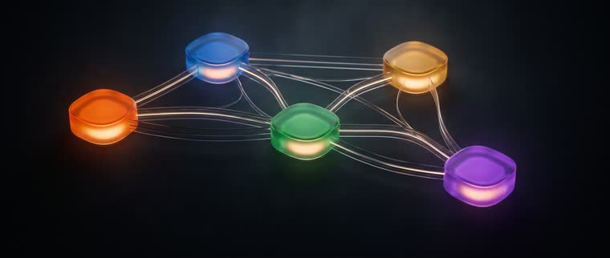
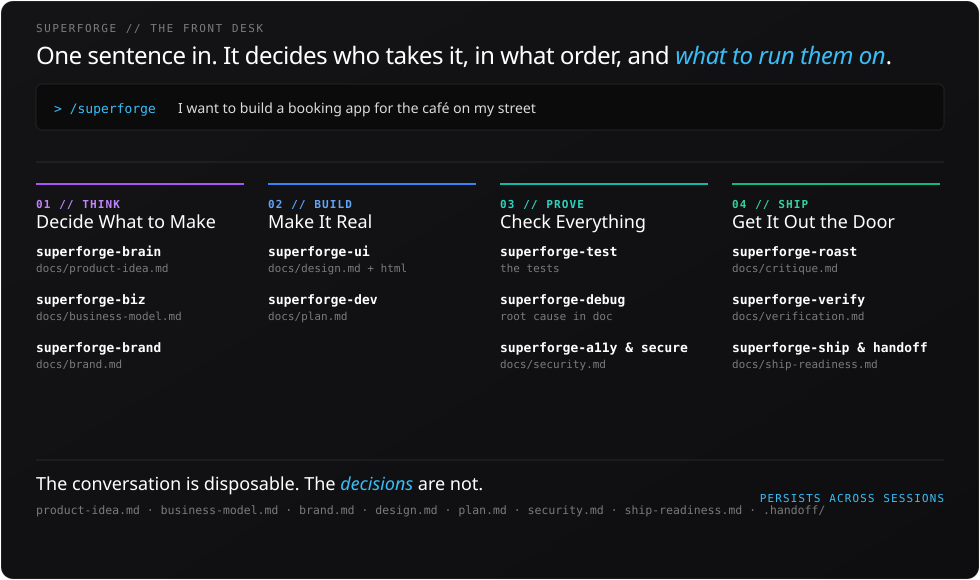
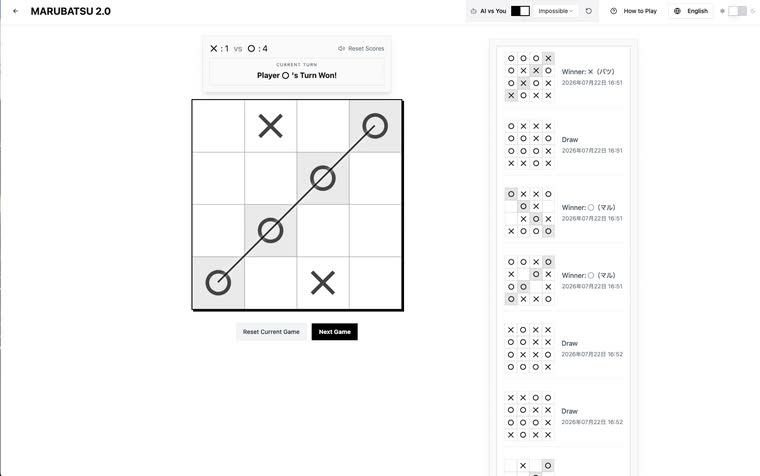

Intent first. Then the interface. Twenty years designing products at enterprise scale — now spent building the AI itself. 24 selected projects below. まず意図。インターフェイスはその後。 エンタープライズ規模で20年、プロダクトを設計。いまは AI そのものを作っています。以下、選抜24件。



This is variant B, kept alongside variant A for comparison. これは比較用のバリアントBです。バリアントA と並べて確認できます。